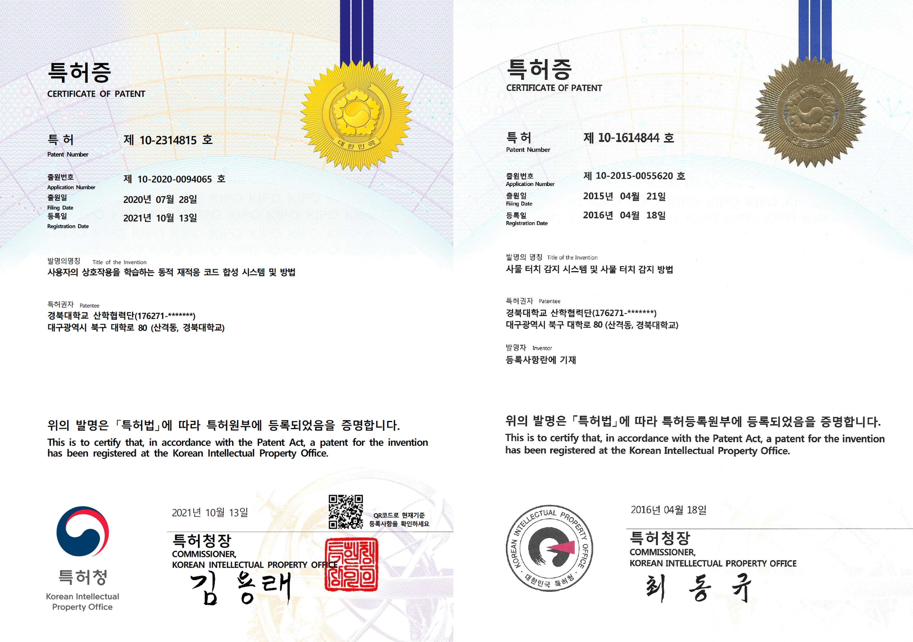

AI-S2oC Lab
Since 2014

Patents
Certificates of Patents
|  |
Domestic Patents
| [1] | Daejin Park*. Data Processing Method and Apparatus for Performing Deserializing and Serializing In Korea Patent and Tradmark Office, Nov. 2008. Korea Patent KR100866603B1. [DOI] |
| [2] | Daejin Park*. Liquid Crystal Display Device Having Timing Controller and Source Driver In Korea Patent and Tradmark Office, Aug. 2008. Korea Patent KR100850211B1. [DOI] |
| [3] | Daejin Park*. Hybrid-Synchronization Apparatus and Method of Shutter Glasses In Korea Patent and Tradmark Office, Jun. 2012. Korea Patent KR101153159B1. [DOI] |
| [4] | Daejin Park*. Data Protection and Mirroring Method and System Thereof In Korea Patent and Tradmark Office, Aug. 2012. Korea Patent KR101173873B1. [DOI] |
| [5] | Daejin Park*. Microcontroller and Operating Method Thereof In Korea Patent and Tradmark Office, Apr. 2013. Korea Patent KR101259395B1. [DOI] |
| [6] | Daejin Park*. Method for Reducing Power Consumption of Flash Memory and Apparatus Thereof In Korea Patent and Tradmark Office, Aug. 2014. Korea Patent KR101419710B1. [DOI] |
| [7] | Daejin Park*. Method for Protecting Binary Data in Non-Volatile Memory and Apparatus Thereof In Korea Patent and Tradmark Office, Jul. 2014. Korea Patent KR101416685B1. [DOI] |
| [8] | Daejin Park*. Method for Reducing Power Consumption of Flash Memory and Apparatus Thereof In Korea Patent and Tradmark Office, Apr. 2014. Korea Patent KR101379883B1. [DOI] |
| [9] | Daejin Park*. System and Method for Managing Adaptive Clock Speed In Korea Patent and Tradmark Office, Apr. 2015. Korea Patent KR101513437B1. [DOI] |
| [10] | Daejin Park*. Signal-to-Event Converter and Event-Driven Signal Processing Method In Korea Patent and Tradmark Office, Nov. 2015. Korea Patent KR101568192B1. [DOI] |
| [11] | Daejin Park*. Event-Driven Signal Processor and Method Thereof In Korea Patent and Tradmark Office, Nov. 2015. Korea Patent KR101568197B1. [DOI] |
| [12] | Daejin Park*. System and Method for Mixing Circuit Simulation Based on HLA/RTI In Korea Patent and Tradmark Office, May. 2016. Korea Patent KR101621841B1. [DOI] |
| [13] | Daejin Park*. System and Method for Mixing Circuit Simulation Based on Framework In Korea Patent and Tradmark Office, Jun. 2016. Korea Patent KR101629725B1. [DOI] |
| [14] | Daejin Park*. Mixing Circuit Simulation System and Method In Korea Patent and Tradmark Office, Dec. 2016. Korea Patent KR101683636B1. [DOI] |
| [15] | Daejin Park*. System and Method for Things Touch Detection In Korea Patent and Tradmark Office, Apr. 2016. Korea Patent KR101614844B1. [DOI] |
| [16] | Daejin Park*. Button Control Apparatus and Method Using Sensing Proximity In Korea Patent and Tradmark Office, Oct. 2016. Korea Patent KR101668031B1. [DOI] |
| [17] | Daejin Park*. Display Control Apparatus and Method Using Recognizing Proximity In Korea Patent and Tradmark Office, Apr. 2017. Korea Patent KR101723513B1. [DOI] |
| [18] | Daejin Park*. TRANSMITTER, RECEIVER, CONTROL APPARATUS AND METHOD USING RANDOM BIT-INVERSION In Korea Patent and Tradmark Office, May 2020. Korea Patent Pending KR102403462B1. [DOI] |
| [19] | Daejin Park*. APPARATUS AND METHOD FOR FREEZE PROPAGATION PROTECTION BY POWER PROFILE COLLABORATIVE-MONITORING In Korea Patent and Tradmark Office, May 2020. Korea Patent Pending KR102346721B1. [DOI] |
| [20] | Daejin Park*. Microcontroller Update Managemnet Method and Management System In Korea Patent and Tradmark Office, May 2020. Korea Patent Pending KR102397340B1. [DOI] |
| [21] | Daejin Park*. Event Logging system for IoT-Driven Rare-Event Applications and Event Logging method for IoT-Driven Rare-Event Applications In Korea Patent and Tradmark Office, May 2020. Korea Patent Pending KR102416583B1. [DOI] |
| [22] | Daejin Park*. APPARATUS AND METHOD FOR INTELLIGENT ABNORMAL OPERATION RECOGNITION OF SYSTEM USING BITMAP PATTERN REPRESENTATION OF POWER-CONSUMPTION In Korea Patent and Tradmark Office, May 2020. Korea Patent Pending KR102335604B1. [DOI] |
| [23] | Daejin Park*. APPARATUS FOR DEPRESSING ABNORAML HIGH LEVEL PULSE OF PULSE WIDTH MODULATION In Korea Patent and Tradmark Office, May 2020. Korea Patent Pending KR102340899B1. [DOI] |
| [24] | Daejin Park*. APPARATUS AND METHOD FOR PREVENTING POWER ANALYSIS ATTACK USING VOLTAGE CHANGE In Korea Patent and Tradmark Office, May 2020. Korea Patent Pending KR102374329B1. [DOI] |
| [25] | Daejin Park*. DYNAMIC RE-ADAPTIVE CODE SYNTHESIS SYSTEM AND METHOD FOR LEARNING USER INTERACTION In Korea Patent and Tradmark Office, June 2020. Korea Patent Pending KR102314815B1. [DOI] |
| [26] | Daejin Park* and Jisu Kwon. FIRMWARE UPDATE METHOD USING QR CODE IMAGE AND ELECTRONIC DEVICE PERFORMING SAME In Korea Patent and Tradmark Office, June 2020. Korea Patent Pending KR102391306B1. [DOI] |
| [27] | Daejin Park* and Jisu Kwon. Firmware Update Device and Update Method In Korea Patent and Tradmark Office, June 2020. Korea Patent Pending KR102375290B1. [DOI] |
| [28] | Daejin Park* and Jisu Kwon. CODE INSERTION MODULE AND METHOD FOR DIVIDING STORAGE OF FIRMWARE SEGMENT In Korea Patent and Tradmark Office, June 2020. Korea Patent Pending KR102391312B1. [DOI] |
| [29] | Daejin Park*. INTRA-BODY COMMUNICATION RECEIVER AND TRANSMITTER FOR THE SAME In Korea Patent and Tradmark Office, June 2020. Korea Patent Pending KR102327794B1. [DOI] |
| [30] | Daejin Park* and Seungmin Lee. Recorded media recording of the signal optimization device, method and program for performing the analysis applicable to low power-low capacity embedded equipment In Korea Patent and Tradmark Office, Sept 2020. Korea Patent Pending KR102399635B1. [DOI] |
| [31] | Daejin Park* and Seungmin Lee. Recorded media recording of the signal compression apparatus, method and program for performing the analysis based on template signal In Korea Patent and Tradmark Office, Sept 2020. Korea Patent Pending KR102406917B1. [DOI] |
| [32] | Daejin Park*. IOT SERVICE FLASH CODE UPDATE SYSTEM AND IOT SERVICE FLASH CODE UPDATE METHOD In Korea Patent and Tradmark Office, Sept 2020. Korea Patent Pending KR102393064B1. [DOI] |
| [33] | Daejin Park*. System of generating patch information for software malfunction and method therof In Korea Patent and Tradmark Office, Oct 2021. Korea Patent Pending. www: |
| [34] | Daejin Park*. Method of detecting software malfunction using Binary Image In Korea Patent and Tradmark Office, Oct 2021. Korea Patent Pending. www: |
| [35] | Daejin Park* and Seungmin Lee. System of detecting software abnormal operation using Comparative Neural Network Learning and method thereof In Korea Patent and Tradmark Office, Oct 2021. Korea Patent Pending. www: |
| [36] | Daejin Park* and Jisu Kwon. Firmware system to control software malfunction and control method thereof In Korea Patent and Tradmark Office, Oct 2021. Korea Patent Pending. www: |
| [37] | Daejin Park* and Carnavicom. Semantic Depth Data Transmission Reduction Techniques using Frame-to-Frame Masking Method for Light-weighted LiDAR Signal Processing Platform In Korea Patent and Tradmark Office, Oct 2021. Korea Patent Pending. www: |
| [38] | Daejin Park* and Carnavicom. Vision-based Real-time Vehicle Detection and Tracking Algorithm for Forward Collision Warning In Korea Patent and Tradmark Office, Oct 2021. Korea Patent Pending. www: |
| [39] | Daejin Park* and Heuijee Yun. Autonomous Driving Algorithm Simulation Method and System based on Game Engine In Korea Patent and Tradmark Office, Jan 2022. Korea Patent Pending. www: |
| [40] | Daejin Park* and Heuijee Yun. Real-Time Object Detection System and Method using Interleaving of Snapshots In Korea Patent and Tradmark Office, Jan 2022. Korea Patent Pending. www: |
| [41] | Daejin Park* and Dongkyu Jung. LiDAR Data Transmission Method for Reducing LiDAR Data Transmission Amount, Apparatus and System for Performing the Same In Korea Patent and Tradmark Office, Jan 2022. Korea Patent Pending. www: |
| [42] | Daejin Park* and Dongkyu Jung. Object Detection Device and Method using Low-Resolution LiDAR Sensor In Korea Patent and Tradmark Office, Jan 2022. Korea Patent Pending. www: |
| [43] | Daejin Park* and Jisu Kwon. Memory Connection System and Memory Connection Method for Acceleration of Operation In Korea Patent and Tradmark Office, Dec 2022. Korea Patent Pending. www: |
| [44] | Daejin Park* and Sunghoon Hong. Object Detection Method and Object Detection Device Performing the Same In Korea Patent and Tradmark Office, Dec 2022. Korea Patent Pending. www: |
| [45] | Daejin Park* and Seungmin Lee. Dust Sensing Method and Dust Sensing Device Performing the Same In Korea Patent and Tradmark Office, Dec 2022. Korea Patent Pending. www: |
| [46] | Daejin Park* and Seungmin Lee. Fine Dust Sensing Method and Fine Dust Sensing Device Performing the Same In Korea Patent and Tradmark Office, Dec 2022. Korea Patent Pending. www: |
| [47] | Daejin Park* and Heuijee Yun. System and Method for Recognizing Object Included in Image In Korea Patent and Tradmark Office, Dec 2022. Korea Patent Pending. www: |
| [48] | Daejin Park* and Dongkyu Jung. System and Method for Recognizing Object based on LiDAR In Korea Patent and Tradmark Office, Dec 2022. Korea Patent Pending. www: |
| [49] | Daejin Park* and Dongkyu Lee. Apparatus and method for cloud platform In Korea Patent and Tradmark Office, March 2023. Korea Patent Pending. www: |
U.S. Patents (International)
| [1] | Methods and Apparatus for Processing Serialized Video Data for Display In US Patent and Tradmark Office, April 2015. US Patent US9007357B2. [DOI] |
| [2] | Methods and Apparatus for Processing Serialized Video Data for Display In US Patent and Tradmark Office, July 2008. US Patent US20080158424A1. [DOI] |
| [3] | Liquid Crystal Display Device Having Time Controller and Source Driver In US Patent and Tradmark Office, Aug. 2008. US Patent US20080204388A1. [DOI] |
| [4] | Methods and Apparatus for Processing Serialized Video Data for Display In Japan Patent and Tradmark Office, July 2008. Japan Patent JP2008165238A. [DOI] |
| [5] | A Method for Serial-Parallel Conversion of Signals, Method for Serial Conversion of Parallel Video Data, Data Processing Method and Data Processing Device In Germany Patent and Tradmark Office, July 2008. Japan Patent DE102007058827A1. [DOI] |
| [6] | Method and Apparatus for Protecting Binary Data in Non-Volatile Memory In US Patent and Tradmark Office, Nov. 2015. US Patent US20150324613A1. [DOI] |
| [7] | Method for Reducing Power Consumption of Flash Memory and Apparatus Therefor In US Patent and Tradmark Office, Nov. 2015. PCT Patent PCT/KR2013/000427. [DOI] |
| [8] | Method for Reducing Power Consumption of Flash Memory, and Device for Same In US Patent and Tradmark Office, June 2014. PCT Patent PCT/KR2013/011502. [DOI] |
This page was generated by our compiler @ copyright reserved (AI-S2oC Lab)